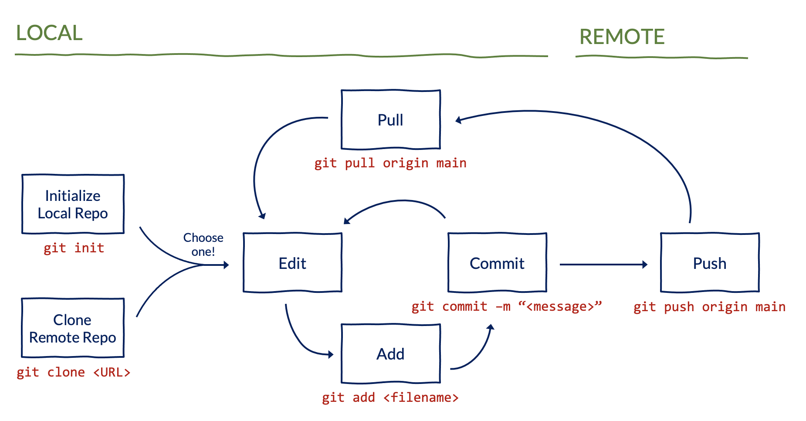
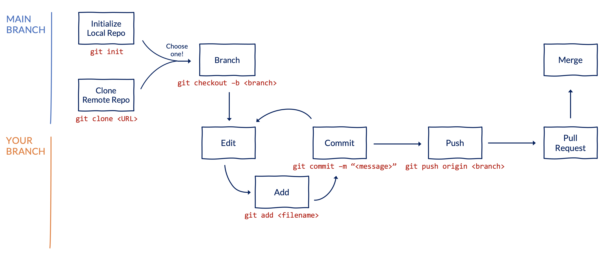

Git and Github Workflow
How to Use Git and GitHub at the Urban Institute
This guide is intended to help Urban Institute employees get started with Git and GitHub. This guide assumes that you have already gone through the steps in the Access and Installation Guide.
We know that learning these tools can be a challenge, but we’re here for you! Drop a message in the #github Slack channel if you run into issues, and we will be happy to help out.
1 Using the command line
This guide shows how to use Git from the command line, which may look scary but we promise will be useful to learn! There are other tools to interact with Git using a visual interface (like Github Desktop, or RStudio’s built in Git integration). These tools may be helpful, but we recommend starting by reading this guide and understanding how Git works. Under the hood, all those visual interfaces just use the command line.
To run Git commands from the command line on a Windows computer, right click within any directory (i.e. folder) on your computer, and select Git Bash Here. Alternatively, if you already use an IDE like RStudio or VS Code, you can use the terminal within these IDEs directly to run commands. You can also read more about the command line in this tutorial.
<run_this_command> <> are used to indicate blanks that need to be filled in. Don’t actually submit <>. Instead, replace them with the desired text.
2 Basic workflow
2.1 The big picture
Before diving into syntax, keep in mind the big picture:
- Create a repository for a project.
- Tell Git which files to track.
- Take a snapshot of tracked files and add a commit message.
- Send those snapshots to a shared folder so others can access them.
- Repeat, repeat, repeat.
2.2 Creating a new repository
This only needs to happen once per repository!
Use this option if you do not already have a project folder on your computer and are starting from scratch.
- Under UI-Research on GitHub, click the green button titled New Repository (top right corner). Give the repository a name, and click Create Repository.
- On GitHub, navigate to the repo that you just created and click the green button titled Code (top right corner). Copy the HTTPS remote URL. It will look like
https://github.com/UI-Research/<name_of_your_repo>.git. - Navigate to the directory where you want to keep the repo on your computer. Using the URL that you copied in the last step, clone the repository:
git clone <remote_url_for_your_repo>Use this option if you already have a project folder on your computer and want to turn that folder into a GitHub repository.
- Under UI-Research on GitHub, click the green button titled New Repository (top right corner). Give the repository the same name as your directory, and click Create Repository.
- On GitHub, navigate to the repo that you just created and click the green button titled Code (top right corner). Copy the HTTPS remote URL. It will look like
https://github.com/UI-Research/<name_of_your_repo>.git. - Navigate to the root of your project folder and initialize a local repository:
git init- Sync the URL for the remote repository that you copied in Step 2:
git remote add origin <remote_url_for_your_repo>2.3 Cloning an existing repository
This only needs to happen once per repository per computer!
If you want to clone a repository that already exists on GitHub to your computer:
- On GitHub, navigate to the repo, and click the green button titled Code (top right corner). Copy the HTTPS remote URL. It will look like
https://github.com/UI-Research/<name_of_your_repo>.git. - Navigate to the directory where you want to keep the repo on your computer. Using the URL that you copied in the last step, clone the repository:
git clone <remote_url_for_your_repo>
2.4 Adding collaborators to a repository
To share the repository with others, navigate to the GitHub page for the repo. Then, click Settings (along the top) and Collaborators and Teams (along the left side panel). Click the relevant buttons to add people (individual users) or teams (groups of users).
Teams are useful if you have a set of users who will all need access to multiple repositories. Creating a team saves you from having to add each user individually for each new repo. Urban has 50+ teams on GitHub for specific projects (e.g. Education Data Team for folks across TECH, COMMS, and EDP who work on the Education Data Portal) or teams or centers within Urban (e.g. Data Science or HFPC).
2.5 Basic commands and workflow
The most common Git commands you will use include git add, git commit, and git push. These tell Git which files to track, when to take snapshots of those files, and when to send those snapshots to GitHub for others to see.
git add adds a file to Git’s staging area. It tells Git, “Hey, look at this file.”
git add <file_name>git commit commits changes made to added files to the repository. It says, “Hey, take a snapshot of the files I’ve added.”
git commit -m "<message>" git status prints out important information about your repo. Use it before and after most commands to understand how files have changed in your repo.
git status git push pushes your local commits to the remote repository on GitHub. It says, “hey, push all my snapshots to a shared folder so that other people can see them.” The command below will push to the default main branch of your repo. Note that for repositories created before August 2021, the default branch was called master, instead of main.
git push origin mainBefore running the git push command, your code and commits could only be accessed on your local computer.

3 Collaborative workflow
The main benefit of version control is making sure you and your collaborators are all using the latest and greatest version of your code. When working individually, this will just be your local version. When working with others, you should pull down the latest changes that anyone has pushed remotely before making further updates.
git pull copies the latest changes that anyone has pushed remotely to your local repository. It says, “Hey, replace my local version with the current version on GitHub.” The command below will pull the latest version on the main branch.
git pull origin main
3.1 Branches
So far in this guide, we’ve been working off a single main branch. By using multiple branches, you and your collaborators can update existing code or add new code without the fear of overwriting each others’ files. Branches let you say “Hey, I’m going to leave the main version of the code alone while I try some things out over here.”

git checkout switches your local version to different branch. The -b flag in the command below tells Git to first create a new branch and then switch to it. When you first create a new branch, it will be identical to the local version of the branch that you switched from (typically the main branch).
git checkout -b <name_of_new_branch> git branch will tell you what branch you are currently on. It’s always a good idea to run git branch before pushing.
git branchgit push sends your local commits to the remote repository, as noted earlier. To push to a specific branch, specify the branch name in the command. If you don’t explicitly specify a branch, Git will push to whichever branch you are on.
git push origin <name_of_new_branch> 3.2 Pull requests
When you’re ready to share the updates on your branch with others, open a pull request. This says, “Hey, I’d like to merge the work on my branch into the main (or some other) branch.” Pull requests makes it easy for others to see the changes you’ve made and provide feedback. They also help organize multiple related commits into a single update.
The most common way to open, review, and merge a pull request is through GitHub, rather than from the command line. Different teams develop their own standards for branching and pull requests, but here’s a common workflow:
From your repo, click Pull requests (along the top) and then click the green New pull request button.
Select the branch with your work. By default, GitHub will create a pull request into the
mainbranch.Review the files that have changed to ensure you don’t accidentally merge files you don’t intend to into the
mainbranch.Click Create pull request. Write a summary of the updates included in the pull request and why you made those updates. You can also add Reviewers (along the right panel) to notify others that you would like them to look at your changes.
To make changes to the code included in a pull request if (e.g. if a reviewer requests updates), simply push to the same branch. The pull request will automatically be updated to reflect these changes.
Once approved, merge the pull request into the
mainbranch by clicking the green Merge or Rebase and merge button.Once your branch has been merged, delete it.

After merging the pull request, you should return to the main branch and sync your local directory with the merged changes:
git checkout switches your local version to a different branch.
git checkout maingit pull copies the latest changes from the pull request that you just merged remotely to your local repository. If you don’t explicitly specify a branch when running the git pull command, Git will pull from the branch you are currently on.
git pull4 Summary of commands
The table below summarizes the commands that we’ve discussed in this guide. There are also tons of Git cheat sheets available online (e.g. from GitHub Education, from GitLab, or from Atlassian).
| Command | What you’re telling Git |
|---|---|
git clone <remote_url_for_your_repo> |
“Hey, copy this remote project to my local computer” |
git add <file_name> |
“Hey, look at this file” |
git commit -m "<message>" |
“Hey, take a snapshot of the files I’ve added” |
git status |
“Hey, tell me about what you’re looking at” |
git push |
“Hey, send my snapshots to a shared folder so other people can see them” |
git pull |
“Hey, replace my local version with the remote version of the shared folder” |
git checkout -b <name_of_new_branch> |
“Hey, create a new branch and switch to it” |
git checkout <name_of_existing_branch> |
“Hey, switch to a different branch” |
git branch |
“Hey, tell me what branch I’m on” |
5 Parting advice
Phew, that was a lot! If you’re new to Git and GitHub, don’t get bogged down in the details. Start by adding, committing, and pushing files to GitHub on the main branch. Once you’re comfortable with those steps, find a colleague to work with you on the main branch and start pulling their updates. Before long, you’ll have that workflow down and will be ready to start using multiple branches and opening pull requests.
This guide is meant to be an introduction. Git and GitHub have hundreds of useful commands and features not discussed here. Different folks and teams also have different opinions on workflows and best practices for using these tools. Once you have a grasp of the basics, we encourage you to start exploring to find a workflow that works for you.
You will inevitably run into errors along the way, but learning how to resolve those will make you a better researcher, programmer, and problem solver. Don’t be afraid to ask for help – the #github Slack channel is a great place to start!
Lastly, remember that if things ever go horribly wrong, you can use the inelegant (but effective) “burn it all down” technique to return to a happy state: save your work elsewhere, delete the project folder, and clone a fresh copy of the repository.